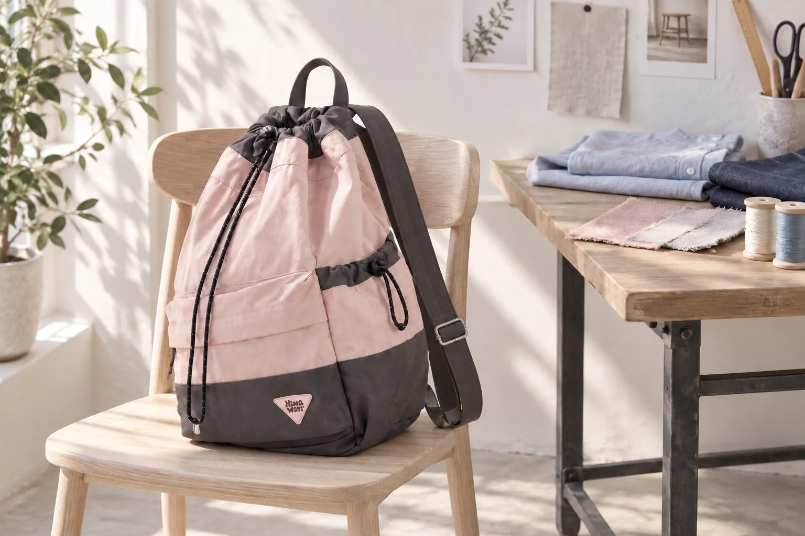
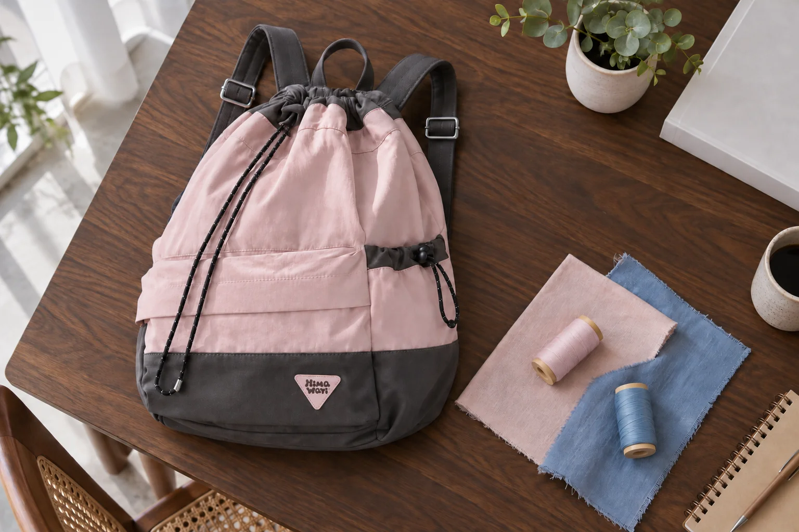

스트링 백팩은 입구를 조이는 동작까지 보고 고른다

백팩 사진에서 둥글게 잡힌 주름이 마음에 들어 스트링형을 고를 수 있습니다. 입구를 조이는 끈이 보이는 가방은 그 끈을 손으로 다루는 방식까지 선택의 일부가 됩니다. No.0513 핑크의 실제 원본에서는 분홍색 몸판과 짙은 배색, 입구 주변의 주름, 옆으로 이어지는 끈을 볼 수 있습니다. 주름이 만드는 외형을 좋아하는 마음과 매일 열고 닫는 동작이 자신에게 맞는지는 각각 살펴볼 수 있는 질문입니다.
사진에서 입구와 끈의 길을 구분하기
정면과 측면 사진을 함께 보며 끈이 어디서 나와 어떤 부품을 지나는지 따라가보세요. 장식처럼 보이는 끈도 입구 모양과 관계가 있을 수 있지만, 닫는 순서를 한 장의 사진으로 모두 알아내기는 어렵습니다. 가능한 경우 해당 모델의 사용 안내나 입구를 연 사진을 추가로 확인합니다. 끈이 두 가닥 보인다고 임의로 매듭을 만드는 방법을 정하거나 끝의 부품을 분해해보는 방식은 피하는 편이 좋습니다.
이 제품의 원본에는 어두운 배색으로 이어지는 어깨끈과 위쪽 손잡이도 보입니다. 입구의 조임끈, 어깨에 메는 끈, 손으로 잡는 손잡이는 이름부터 나누어두면 사용 안내를 읽기 쉽습니다. 사진 속 끈이 길게 늘어져 있다는 이유로 그 부분을 운반 손잡이로 쓰지 않습니다. 판매자에게 문의할 때에도 사진에서 어느 끈을 말하는지 짚어주면 '끈 조절'이라는 표현이 서로 다른 부분을 가리키는 일을 줄일 수 있습니다.

자주 여는 사람과 한 번에 꺼내는 사람
가상의 두 사용 상황을 놓고 입구를 비교할 수 있습니다. 이동 중 작은 소품을 자주 꺼내는 날과 목적지에서 가방을 내려놓고 큰 물건을 꺼내는 날입니다. 앞의 경우에는 사용할 소품이 어느 포켓에 있는지, 그 포켓을 열기 위해 주 입구까지 다루어야 하는지가 궁금해집니다. 뒤의 경우에는 입구를 충분히 펼쳤을 때 물건이 지나갈 경로와 가방을 받칠 자리를 보게 됩니다. 스트링형이라는 이름만으로 어느 상황에 더 편하다고 결정하지 않습니다.
지퍼형을 오래 써왔다면, 익숙한 손의 움직임이 새 가방에서도 자연스러운지 직접 확인할 필요가 있습니다. 가방을 내려놓고 여닫는 방식과 손에 든 상태에서 여닫는 방식은 다르게 느껴질 수 있습니다. 조임 상태를 확인하는 데 필요한 동작을 알고 나면, 아침에 한 번 열고 목적지에서 다시 여는 사용과 짧은 이동 중 여러 번 여는 사용을 자신의 습관에 대입할 수 있습니다. 실제 사용 경험은 제품을 만져본 뒤 판단할 부분으로 남겨둡니다.
입구의 주름과 실제 수납 공간은 다른 정보
No.0513의 제조사 카탈로그 외부 크기는 가로 30cm, 세로 43cm, 폭 15cm입니다. 겉이 부드러워 보이더라도 외부 치수를 늘려 해석하지 않습니다. 입구를 조였을 때의 윤곽과 열었을 때 물건이 지나갈 폭, 내부 칸의 치수는 각각 확인해야 합니다. 사진에서 본 길쭉한 형태가 마음에 들어도 자신의 물건을 넣을 수 있는지는 별도의 구매 조건입니다. 뚜껑이 있는 케이스처럼 가장 넓은 부분이 따로 있다면 그 외형까지 알려주는 편이 좋습니다.
제품 정보에는 노트북 수납칸의 가로와 세로가 28×28cm로 적혀 있고 두께는 기재되어 있지 않습니다. 이 정보만으로 특정 인치의 노트북이 들어간다고 결론 내리지는 않습니다. 기기 본체와 케이스의 외형, 들어갈 방향, 입구의 통과 조건을 함께 확인해야 합니다. 노트북을 넣을 목적이라면 가방 외부 세로 길이와 전용 칸의 세로 길이를 혼동하지 않는 것이 먼저입니다. 확인되지 않은 두께나 보호 성능을 사진으로 채워 넣을 필요도 없습니다.

앞 포켓을 본 뒤 입구 선택으로 돌아오기
해당 모델의 실제 제품 상세 사진에서는 전면 포켓과 덮개 모양을 확인할 수 있습니다. 주 입구가 스트링형이라고 모든 물건을 한 입구로 꺼내야 한다고 생각할 필요는 없습니다. 반대로 앞 포켓이 보인다고 손에 있는 소품이 모두 들어간다고 생각하지도 않습니다. 자주 사용하는 한 물건을 정해 포켓의 입구와 깊이를 문의한 다음, 그 물건 때문에 주 입구를 여는 횟수가 어떻게 달라질지 생각해볼 수 있습니다.
예를 들어 작은 케이스를 앞쪽에 두려는 사람은 그 케이스의 가로·세로·두께와 포켓을 닫는 방식을 함께 물어볼 수 있습니다. 큰 물건 위주로 사용하는 사람이라면 전면 포켓보다 주 수납부의 입구 사진을 더 보고 싶을 수 있습니다. 어느 쪽도 실제 치수를 확인하기 전에는 수납이 된다고 단정할 수 없습니다. 제품 구조를 살펴보는 목적은 포켓의 수를 세는 데서 끝나지 않고, 자신이 자주 여는 부분이 어디일지 알아보는 데 있습니다.
주름의 모양도 사용 후에 다시 보기
사진에서 보이는 주름은 촬영할 때의 끈과 내용물 배치에 따른 모습입니다. AI 사진 역시 형태를 살펴보도록 꾸민 연출이며 실제 수납 실험은 아닙니다. 물건을 담았을 때의 주름과 입구 모양, 내려놓았을 때의 윤곽은 실물에서 비교해야 합니다. 가방이 비어 있을 때의 외형만 보고 고른 뒤 예상과 다르다고 느끼지 않도록, 실제 사용할 물건을 담은 모습을 확인할 수 있는지 질문해보세요.
스트링형 백팩을 후보로 남긴다면 자신의 선택 이유를 짧게 구분해볼 수 있습니다. 부드럽게 잡힌 입구가 마음에 드는지, 끈을 조이는 방식이 익숙한지, 자주 쓸 포켓이 원하는 물건과 맞는지를 살펴봅니다. 디자인에 대한 호감이 분명해도 사용 동작이 망설여질 수 있습니다. 그때에는 끈을 임의로 바꾸기보다 제품 안내와 실물 확인을 통해 입구를 열고 닫는 한 번의 사용을 먼저 알아보는 편이 좋습니다.